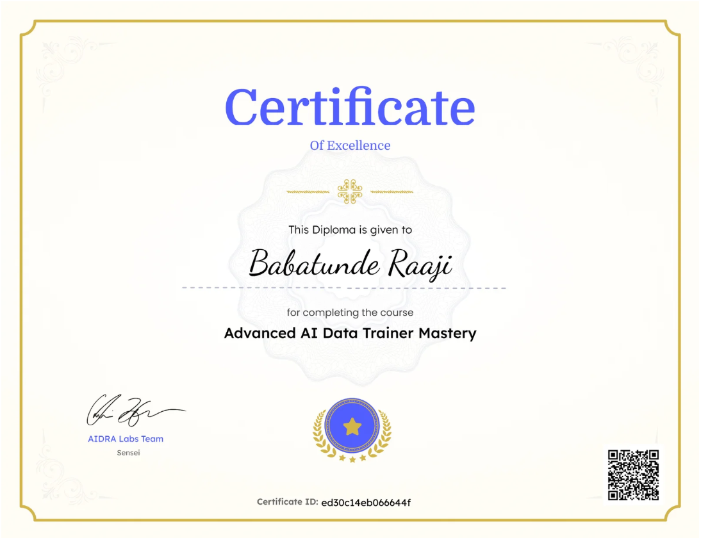
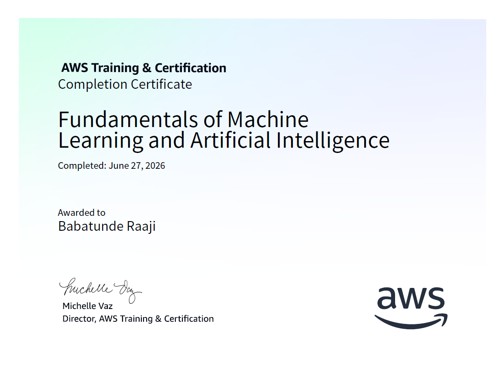
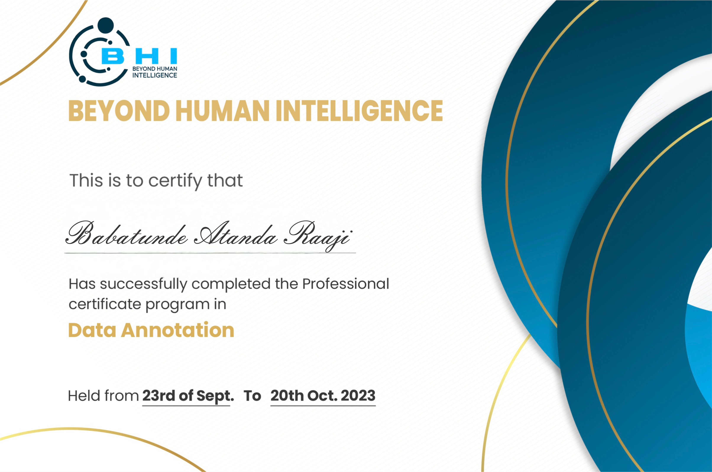

2026
Advanced AI Data Trainer Mastery
AIDRA Labs
Advanced AI data training covering concepts including reinforcement learning, supervised fine-tuning, RLHF and RAG.
Credential ID: #ed30c14eb066644f
CERTIFICATIONS
Professional certifications and learning milestones, with certificate evidence and verification where available.

Advanced AI data training covering concepts including reinforcement learning, supervised fine-tuning, RLHF and RAG.
Credential ID: #ed30c14eb066644f

Foundational learning across machine learning and artificial intelligence concepts, including deep learning, generative AI and related AI/ML principles.

Professional data annotation and AI labeling training covering foundational and advanced data-preparation methodologies.